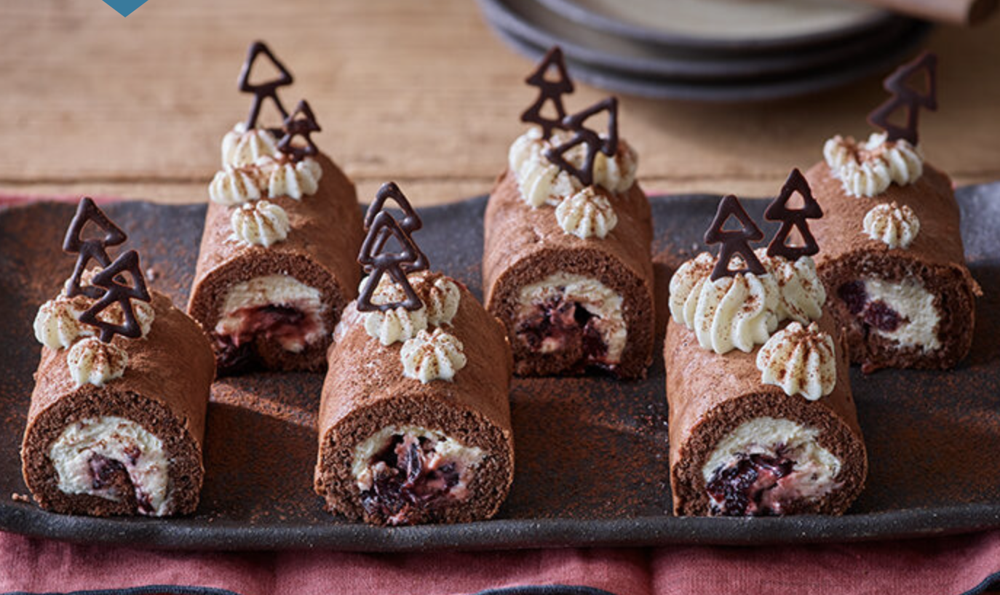
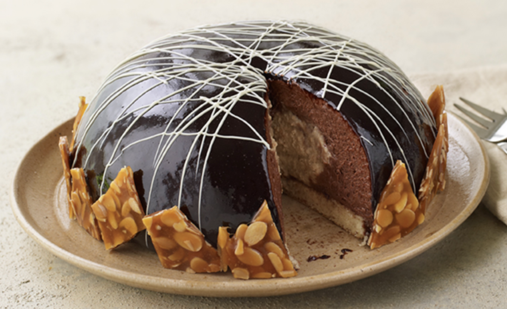
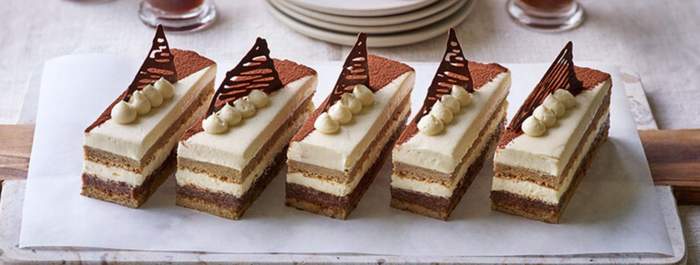

Hall of Fame
 Baked by Hermine in Season 11. |
 Baked by Sophie in Season 8. |
 Baked by Alice in Season 10. |
|  Baked by Jürgen in Season 12. |
 Baked by David in Season 10. |
 Baked by Steph in Season 10. |
 Baked as Technical in Season 12. |
 Baked by Giuseppe in Season 12. |
 Baked by Lottie in Season 11. |